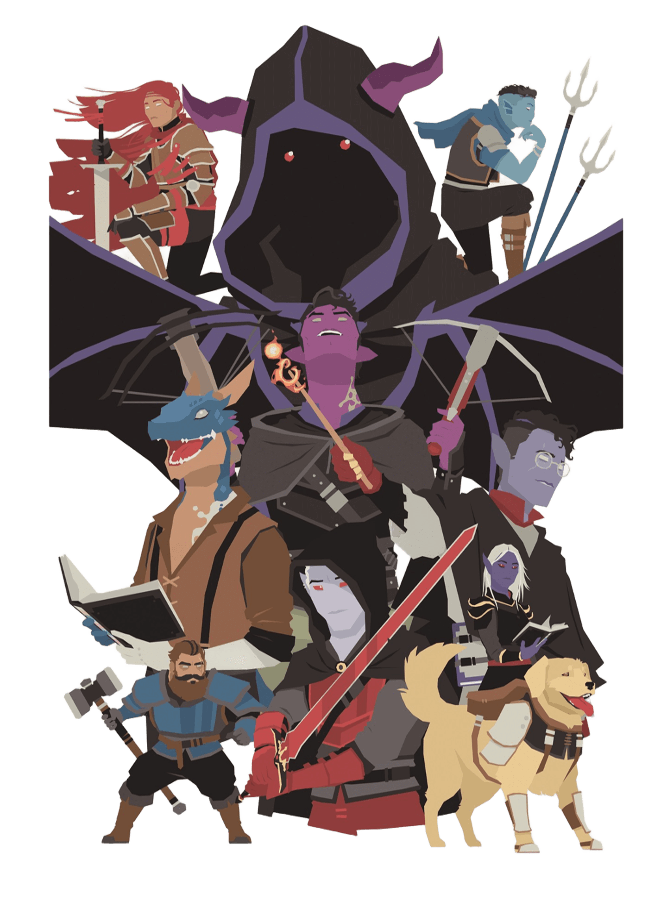

Comment créer votre personnage
- Prenez une fiche personnage vierge (PDF) (Dernière version le 12/04/2026).
- Choisissez un nom et une classe : Sélectionnez une classe (se référer au tableau des classes) qui vous donnera votre DEF de base, votre vie (à calculer avec un lancer de dé) ainsi que les armes / sorts / armures et boucliers que vous pouvez utiliser.
-
Notez vos caractéristiques : Noter vos PV, votre bonus de DEF de base,
ainsi que les armes / sorts / armures et boucliers que vous souhaitez utiliser.
Notez bien qu'un personnage ne peut porter que 3 slots d'armes, et jusqu'à 5 sorts (5 pour les Tisseurs Arcanique et Marche-Rêve, 2 pour les Lame-Litanie).
- Détaillez vos armes et sorts : Indiquez toutes les précisions de vos armes et de vos sorts sur votre fiche personnage (portée, dégâts, tours de récupérations, …)
-
Définissez vos bonus d'attributs : 2 choix : Distribuer +3,
+2, +1, +1, +0, -1, OU +2, +2, +1, +1, +0, +0 pour chacun des
attributs.
(exemple : PUI = +2, AGI = +2, VAI = +1, INS = +0, INT = +1, PER = +0
OU
PUI = +2, AGI = +3, VAI = +1, INS = +0, INT = +1, PER = +-1 ). - Écrivez le lore de votre personnage : Si vous le souhaitez, écrivez un mini lore de votre personnage, d'où vient-il, ce qu'il faisait par le passé, ce qu'il fait là, etc…

Exemples de fiches personnages :
Aelyn Cendrefil

Ser Calmon Doryn

Nerys Vedolia

Brokk Ferkang